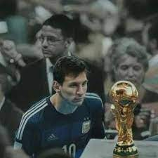
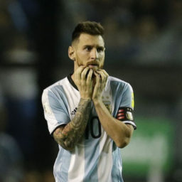
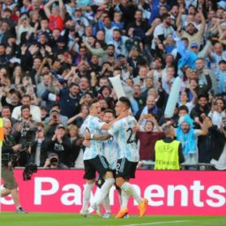

Seleccion Argentina
![ Mundial 2014 Depues de disputar un mundial con mucho ferbor llego la hora de la final de la Copa Mundial 2014, Argentina se enfrentó a Alemania. Aunque Messi tuvo algunas oportunidades, no logró marcar y Alemania finalmente ganó el partido 1-0 en tiempo suplementario. A pesar de no haber ganado el título mundial en 2014, Messi fue reconocido como uno de los jugadores más destacados del torneo. Su desempeño y liderazgo en la competencia mostraron su talento y contribución al equipo argentino. La constancia es un papel fundamental en la historia de Leo.](assets/img/foto1.png){kind=link}
Depues de disputar un mundial con mucho ferbor llego la hora de la final de la Copa Mundial 2014, Argentina se enfrentó a Alemania. Aunque Messi tuvo algunas oportunidades, no logró marcar y Alemania finalmente ganó el partido 1-0 en tiempo suplementario. A pesar de no haber ganado el título mundial en 2014, Messi fue reconocido como uno de los jugadores más destacados del torneo. Su desempeño y liderazgo en la competencia mostraron su talento y contribución al equipo argentino. La constancia es un papel fundamental en la historia de Leo.
![ Mundial 2018 El rendimiento de Argentina en el torneo fue objeto de críticas y decepción. A pesar de los esfuerzos de Messi, el equipo no logró encontrar un juego colectivo sólido y no avanzó más allá de los octavos de final. El Mundial 2018 fue una competencia en la que Argentina no pudo repetir el éxito alcanzado en torneos anteriores. Aunque Messi mostró destellos de su talento y contribuyó con goles y asistencias, la selección argentina no pudo avanzar más lejos y quedó eliminada prematuramente en la competición.](assets/img/fot-b.png){kind=link}
El rendimiento de Argentina en el torneo fue objeto de críticas y decepción. A pesar de los esfuerzos de Messi, el equipo no logró encontrar un juego colectivo sólido y no avanzó más allá de los octavos de final. El Mundial 2018 fue una competencia en la que Argentina no pudo repetir el éxito alcanzado en torneos anteriores. Aunque Messi mostró destellos de su talento y contribuyó con goles y asistencias, la selección argentina no pudo avanzar más lejos y quedó eliminada prematuramente en la competición.

Llegó la gran final contra Brasil, el anfitrión del torneo. Fue un partido muy disputado, pero Argentina se impuso por 1-0 gracias a un gol de Ángel Di María, con una asistencia brillante de Messi. Messi fue un líder en el campo y desempeñó un papel fundamental en el triunfo de su equipo. Aunque Argentina no pudo llegar a la final ni ganar la Copa América 2019, el torneo permitió a Messi y al equipo argentino competir contra otras selecciones de alto nivel y continuar su búsqueda de un título importante.

Finalmente lo que todos esperabamos.Llegó la gran final contra Brasil, el anfitrión del torneo. Fue un partido muy disputado, pero Argentina se impuso por 1-0 gracias a un gol de Ángel Di María, con una asistencia brillante de Messi. Messi fue un líder en el campo y desempeñó un papel fundamental en el triunfo de su equipo. La Copa América 2020 fue un torneo en el que Messi mostró su calidad y liderazgo, guiando a Argentina hacia el título. Fue reconocido como el mejor jugador del torneo y recibió el premio al Jugador Más Valioso. Este triunfo fue muy significativo para Messi y para el fútbol argentino, ya que fue su primer título internacional con la selección mayor.
![ Finalissima 2022 Fideo, que ganó en velocidad y la picó para estirar la diferencia en el marcador e irse al descanso con una ventaja de dos goles. El complemento fue todo de Argentina, que llegó muchísimas veces pero sin efectividad. Lionel Messi nunca pudo superar en el mano a mano a Donnarumma, su compañero en París Saint-Germain, Giovani Lo Celso se perdió goles increíbles y Di María tuvo algunas claras para sentenciar la goleada, pero llegó el tercero sobre el final a través de Paulo Dybala, que ingresó unos minutos antes. La Joya la robó y definió cruzado para sentenciar el 3-0 final para la Selección, que se consagró campeón de la Finalissima y alzó un título en Wembley.](assets/img/finalissima.png){kind=link}
Fideo, que ganó en velocidad y la picó para estirar la diferencia en el marcador e irse al descanso con una ventaja de dos goles. El complemento fue todo de Argentina, que llegó muchísimas veces pero sin efectividad. Lionel Messi nunca pudo superar en el mano a mano a Donnarumma, su compañero en París Saint-Germain, Giovani Lo Celso se perdió goles increíbles y Di María tuvo algunas claras para sentenciar la goleada, pero llegó el tercero sobre el final a través de Paulo Dybala, que ingresó unos minutos antes. La Joya la robó y definió cruzado para sentenciar el 3-0 final para la Selección, que se consagró campeón de la Finalissima y alzó un título en Wembley.

Finalmente luego de tanta expectativa y un partido muy disputado llego el tiempo suplementario lleno de tensión y oportunidades perdidas, el resultado final se decidió en la tanda de penales. Los jugadores argentinos mantuvieron la calma y lograron convertir sus disparos con precisión, mientras que el arquero argentino tuvo una actuación excepcional al atajar uno de los penales de Francia. Con esta victoria en la final, Argentina se consagró campeona del mundo después de 36 años, un logro histórico para el fútbol argentino. La alegría y la celebración se extendieron por todo el país, con millones de fanáticos celebrando el éxito de su selección nacional.